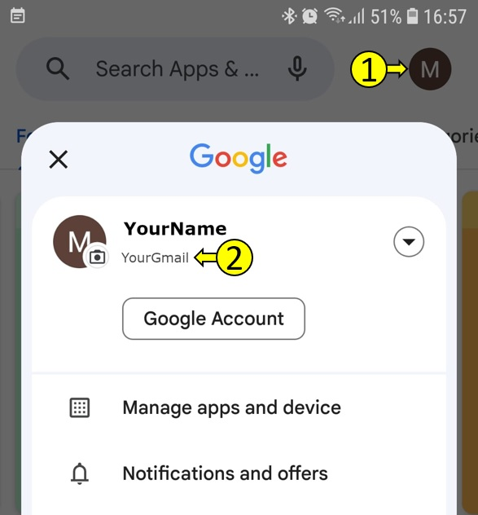

1. ¡Bienvenido al sitio web de SECURElogBook!
Valoro la honestidad y quiero compartir que SECURElogBook es un proyecto que he creado completamente por mi cuenta.SECURElogBook se basa exclusivamente en código desarrollado por Android o por mí. Tomé esta decisión por razones de seguridad y para asegurar que el proyecto siga siendo independiente. Hay un dicho que aprecio especialmente: ‘Un camello es un caballo diseñado por un comité.’
Soy capaz de manejar todo. Desde programar hasta diseñar la interfaz de usuario, crear el sitio web, producir videos de YouTube e incluso aprender nuevas habilidades, tal como lo he hecho con Google Play. Admito que es un desafío publicar una aplicación cuando estás trabajando solo.
Por un lado, hacer todo de manera independiente lleva tiempo. Por otro lado, me permite mantener el control sobre la calidad de mi trabajo.
Al igual que SECURElogBook en sí, este sitio web continuará evolucionando con el tiempo. Mi objetivo principal es publicarlo después de más de cuatro años de esfuerzo dedicado. He invertido no solo mis ahorros, sino también los últimos dos años de arduo trabajo en este proyecto.
Actualmente, el sitio web sirve como centro comunitario para los usuarios de SECURElogBook durante su etapa de beta cerrada (Acceso Anticipado). Para lanzar SECURElogBook en Google Play, necesito realizar una prueba cerrada con al menos 20 usuarios que utilicen activamente la aplicación durante 14 días consecutivos.
En los últimos 4 años, he perfeccionado mis habilidades y desarrollado la tecnología que impulsa SECURElogBook. Durante los últimos 2 años, he invertido mis ahorros y el 100% de mi tiempo en crear esta herramienta poderosa y flexible que ahora está en tus manos. Puedes usar SECURElogBook en tu vida diaria o en el trabajo.
Debido a que le he puesto precio a la aplicación, en menos de 2 euros, la nueva política de Google Play obliga a los probadores a pagar por ella. Por eso necesito tu ayuda.
Puedes estar seguro de que SECURElogBook está meticulosamente diseñado para no tener errores. Las pruebas exhaustivas y los comentarios de los primeros usuarios confirman su confiabilidad.
Cuando pagas por SECURElogBook, estás invirtiendo en un programa de alta calidad que podría transformar tu vida. ¡Tus comentarios también importan! Siéntete libre de sugerir nuevas funciones o informar cualquier problema que encuentres (enlace al final de la página).
Gracias a quienes ya están usando la aplicación la versión que recibirás es aún mejor. A medida que sigo mejorando SECURElogBook, priorizaré la flexibilidad y la usabilidad.
Recuerda que SECURElogBook no es solo otro programa. Es una herramienta poderosa y adaptable diseñada para diversas tareas, ya sea en el trabajo o en otros contextos.
¡Únete a nosotros para dar forma al futuro de SECURElogBook!
Si estás interesado en una aplicación de alta calidad que pueda hacer lo siguiente:
1. Alarmas.
2. Llevar un registro de lo que haces.
3. Recordatorios.
4. Lista de compras.
5. Registro de toma de medicamentos.
6. Motivador personal.
7. Herramienta para recordar todo.
8. Herramienta para mejorar, ya que puedes analizar tus datos con el sistema de búsqueda.
9. Diario personal.
¡Y más!
Todo en un solo lugar y en tu mano.
Este video muestra algunas cosas que puedes hacer con SECURElogBook:
2. Desbloqueando el Poder de SECURElogBook: Tu Compañero Personal de Datos
En el video, mencioné brevemente algunas de las capacidades de SECURElogBook. ¿Pero sabías que esta herramienta flexible no es solo para uso personal? También es aplicable en entornos profesionales.3. ¿Qué hace que SECURElogBook sea excepcional?
. Tus Datos, Tu Control: Con SECURElogBook, tus datos son tuyos, sin almacenamiento en la nube ni acceso externo. Todo se guarda localmente, garantizando tu privacidad y seguridad.. Capacidad de Almacenamiento Infinita: ¿Necesitas almacenar grandes cantidades de información? El sistema de importación/exportación de SECURElogBook asegura que no te encuentres con límites.
. Interfaz de Usuario Sencilla: He diseñado una interfaz intuitiva. Agregar datos es fácil, incluso cuando la aplicación está bloqueada con un PIN de seguridad.
. Funcionalidad de Búsqueda Poderosa: Imagina agrupar y analizar datos sin esfuerzo. El sistema de búsqueda de SECURElogBook te permite obtener conclusiones de tus datos.
4. ¿Cómo SECURElogBook puede transformar tu vida?
. Seguimiento de la salud: Registra lo que comes, bebes y tu bienestar general. Es como tener un diario de salud personal.. Recordatorios y programación: Usa SECURElogBook como tu alarma, recordatorios y planificador diario. Las herramientas de SECURElogBook hacen fácil la planificación de tareas.
. Recuperación de datos: ¿Alguna vez deseaste poder recordar detalles pasados? SECURElogBook te permite almacenar todo, para que nunca pierdas información valiosa.
. Información sobre la salud: Si te enfermas, busca en tus datos para identificar cuándo comenzaron los síntomas. Incluso podrías identificar la causa.
. Colabora con tu médico: Crea informes detallados utilizando tus datos de búsqueda. Compártelos con tu médico para obtener mejores diagnósticos.
¡SECURlogBook pone todo esto y más en tus manos!
¡Ayudémonos mutuamente!
¡Gracias de antemano!Necesito 20 personas que utilicen la aplicación durante 14 días continuos. Esto es parte de la prueba de cierre (close beta). Una vez que completemos este paso, SECURElogBook estará disponible públicamente para que todos la descarguen.
Este video te dará una idea del proceso que la aplicación debe seguir para poder estar disponible en Google Play (Por cierto, no necesitas ver el video. Lo agregué para mostrar por qué necesito pedirte tu cuenta de Gmail):
1. Para participar en la prueba de cierre (close beta), debes ser invitado. Google Play utilizará tu cuenta de Gmail para permitirte descargar la aplicación una vez que seas invitado.
2. Para ser invitado, necesitas enviarme tu cuenta de Gmail.
3. ¿Cómo encontrar tu cuenta de Gmail?
. Abre Google Play.
. Haz clic en el icono en la esquina superior derecha (1).
. (2) es la cuenta de Gmail que Google Play está utilizando.

Solo la cuenta Gmail mostrada arriba funcionará.
4. Envíame esa cuenta de Gmail y te agregaré a la lista de prueba de cierre (close beta). Este es mi Gmail: mgllgmsama5@gmail.com. La forma más sencilla es enviarme un correo electrónico desde tu teléfono. Normalmente, esto utilizará la cuenta de Gmail vinculada a tu Google Play. Agrega esto: Quiero participar en la prueba de cierre de Google Play de SECURElogBook. Así sabré que necesito enviarte una invitación.
5. Agregaré tu cuenta de Gmail a la lista de prueba de cierre (close beta).
6. Te enviaré un enlace de Google Play para que puedas descargar la aplicación (sin invitación, SECURElogBook no será visible).
7. Recibirás un correo electrónico de mi parte (mgllgmsama5@gmail.com) con el enlace de invitación. Una vez que abras el enlace, verás la invitación con un botón para aceptar ser un probador (parte inferior). Esto te permitirá descargar la aplicación desde el enlace en la parte superior del mensaje.
¡Ahora puedes descargar SECURElogBook!
¡Bienvenido al selecto grupo de personas capaces de recordarlo todo! ¡Gracias a SECURElogBook!
6. Por favor, déjame saber tus comentarios dentro de este video
Siéntete libre de:
. Reportar un error.
. Sugerir cambios o nuevas funciones.
. Darme un abrazo virtual, decirme que te gusta la aplicación o que te está ayudando.
. Compartir con otros cómo utilizas SECURElogBook en el trabajo o fuera de él.
¡Haz un comentario y yo me encargaré!
Gracias por tu tiempo
miguel
mgllgmsama5@gmail.com